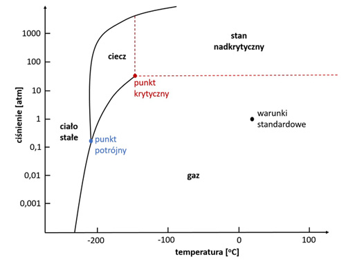
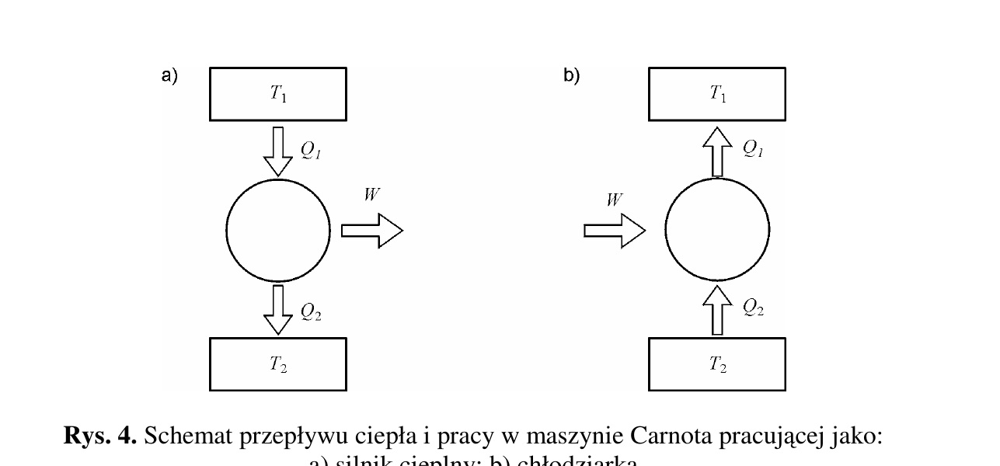
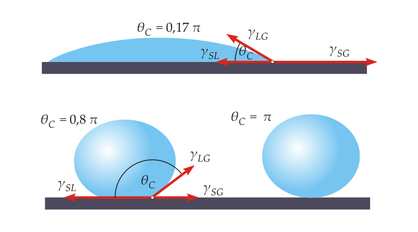

Notatki z pliku notes/03labfiz/labfiz_2025.01.18.md
Ważne
DISCLAIMER: W opracowywaniu poniższych zagadnień jako wyszukiwarki korzystałem z ChatGPT!
Ostrzeżenie
Ponieważ piszemy kratkówkę tylko z ćwiczeń, które odbył mój zespół, następująće ćwiczenia nie są tu opisane:
diody (123)
polarymetr (74)
dyfrakcja (71)
pętla histerezy (39)
Laboratorium Fizyczne - Kartkówka¶
Tranzystor (125)¶
Tranzystor to element półprzewodnikowy
Budowa: Emiter (wytwarzane są z niej łądunki), Baza (steruje przepływem łądunków), Kolektor (zbiera ładunki)
Podział ref:
Bipolarne i Uniplorane
pnp i npn (dla bipolarnych) - ze względu na warstwy przewodzenia
materiał wykonania (krzem, german, e.t.c.)
{małej, dużej} mocy {małej, wielkiej} częstotliwości e.t.c.
Prąd dyfuzyjny - mechanizm transportu ładunków w tranzystorze - związany z przemieszczaniem nośników (elektronów lub dziur) wzdłuż gradientu stężeń.
\(J_n = q * \frac{\partial n}{\partial x}\) (dla elektronów. analogicznie dla dziur) gdzie n i p to koncentracja nośników (odpowiednio).
Polaryzacje złącza Baza-Emiter (EB):
w kierunku przewodzenia: nośniki przepływają z emitera do bazy (odpowiedni potencjał emitera względem bazy)
w kierunku zaporowym: odwrotna polaryzacja niż ww. Blokuje przepływ prądu.
\(\frac{e}{k}\) oznacza stosunek ładunku elektrycznego do stałej Boltzmanna
Stała Boltzmana łączy energię kinetyczną cząstek z temperaturą.
Zastosowania: Silnik Cieplny (cykl Carnot’a), Rozkład Boltzmana
dlaczego tranzystor bipolarny a nie dioda? W tranzystorze bipolarnym łątwo da się zbadać charakterystykę prądową (prąd kolektora \(I_c\) zależy od \(U_{EB}\). zależność t ajest znana \(I_C = A*exp(\frac{U_{EB}}{kT})\))
Halotron (43)¶
Napięcie Halla - Napięcie powstałe w przewodniku z prądem umieszczonym w polu magnetycznym.
ładunki płyną przez halotron
po “włączeniu” B, ładunki pod wpływem siły lorentza zostają przeciągnięte na jdeną stronę przewodnika
ponieważ jednoimienne ładunki sią na jednej stronie przewodnika powstaje napięcie zwane napięciem Hala.
Stała Halotronu zależy od materiału wykonania urządzenia. Określa intensywoność zjawiska \(R_H = \frac{I* d}{U * B}\).
Kalibracja: Przy znanym B dokonujemy pomiarów napięcia halla.
Zastosowania:
pomiar prędkości kątowej
bezkontaktowy pomiar prądu
kompas (w smartfonach)
Halotron wykorzystuje siłę Lorentza
Pomiar: B ~ c*U
Dozymetria (96)¶
Radioaktywne izotopy używane w labie to m.in. Cez (Cs) bądź Kobalt (Co)
Izotopy promieniotwórcze to materiały niestabilne ulegające rozpadowi po określonym czasie (określany probabilistycznie).
Aktywność:
Miara liczby rozpadów w czasie \(\frac{dN}{dt}\)
Zależy od:
Liczby jąder
Okresu połowicznego rozpadu \(T_{\frac{1}{2}}\)
rodzaju promieniotwórczości (alfa, beta, gamma)
Zmienia się w czasie jak \(e^{-\lambda t}\) gdzie \(\lambda = \frac{ln(2)}{T_{\frac{1}{2}}}\)
Zależnośc mocy dawki od odległości wynika z zasady kwadratu odległości \(P \sim \frac{1}{r^2}\)
Rodzaje promieniowania:
\(\alpha\) (duża energia, niska penetracja),
\(\beta\) (średnia energia, średnia penetracja),
\(\gamma\) (niska energia, duża penetracja)
prawo osłabienia \(I(x) = I_0 * e^{-\mu x}\) gdzie \(\mu\) to współczynnik osłabienia - zależy od energii promieniowania i od materiału.
Czas połowicznego rozpadu wiąże się ze stałą rozpadu jak \(T_{\frac{1}{2}} = \frac{ln(2)}{\lambda}\)
Kriogenika (113)¶
Ciekły azot z uwagi na swą “ciekłość” utrzymuje stałą temperaturę \(-209^oC\) (tak jak lód dopuki jest lodem ma najwyżej \(0^oC\))
Diagramy fazowe: 
Punkt potrójny: współistnienie trzech faz
Punkt krytyczny: punkt, w którym zanika różnica między fazami ciecz i gaz
Przejścia fazowe:
I Rodzaju: zachodzi skokowa zmiana pewnych właściwości (np. gęstości). Pochodne są nieciągłe. Wymagają dostarczenai ciepła przemiany.
II Rodzaju charakteryzują się ciągłością wszystkich pochodnych f’cji termodynamicznym. Zwykle występują jako punkty krytyczne.
R. Clausiusa-Clapeyrona \(\frac{dp}{dT} = \frac{\Delta H}{T \Delta V}\) gdzie:
\(\Delta H\) to entalpia (aka ciepło) przemiany
\(\Delta V\) to zmiana objętości
\(p\) to ciśnienie
\(T\) to temperatura
$\frac{dp}{dT} to współczynnik nachylenia krzywej fazowej
Peltier (133)¶
Bilans cieplny Peltiera: 
Dla chłodziarki: \(Q_{chłodzone} + W = Q_{chłodnicy}\) - ciepło jest zabierane z obszaru chłodzonego i przekazywane do chłodnicy
Efekt Thomsona: generacja ciepła w przewodniku z prądem w wyniku przpeływu prądu \(Q_{thomsona} = \tau * I \Delta T * t\) gdzie \(\tau\) to współczynnik Thomsona* w sumie to ten wzór jest z chata GPT i nie mogę nigdzie znaleźć więcej danych więc bym mu nie ufał
Ciepło Joula-Lentza - opozycja do ciepła Thomsona. Powstaje w wyniku istnienia oporu. Jest wydzielane przez płynący prąd.
Sprawność to stosunek uzyskanej pracy do włożonego ciepłą (dla silnika)
Ważne
Sprawność stosujemy dla silnika cieplnego
Wydajność stosuje się dla chłodziarki, gdzie jest to stodunek uzyskanego odpływu ciepła do włożonej pracy. MOŻE BYĆ WIĘKSZA OD 1
Kierunek działania elementu peltiera można odwrócić. Wtedy różnica temperatur wymusza przepływ prądu.
zastosowania generatora cieplnego: zasilanie np. stacji badawczych. Opłacalność zależy - mało efektywne i drogie.
Baterie słoneczne (134)¶
Rodzaje ogniw fotowoltaicznych:
Amorficzne (niska wydajność) (elastyczne, lekkie, tanie, działają przy niskim oświetleniu, ale mniej trwałe)
Polikrystaliczne (niska wydajność, powszechnie używane z uwagi na niskie koszty produkcji)
Monokrystaliczne (najwyższa wydajność, najdroższe)
Granica Shockleya-Queissera - teoretyczna granica wydajności ogniw fotowoltaicznych (33.7% dla widma światła słonecznego)
Informacja
Granica SQ dotyczy tylko ogniw jednozłączowych. Ogniwa wielozłączowe (np. tandemowe - cokolwiek to znaczy) mogą osiągać wydajność większą niż 33.7%
Zmiana natężenia wraz z odległością tak jak w dozymetrii \(\frac{1}{r^2}\) (chociaż nam to w sprawku wyszło bardziej coś jak \(A* 0.99^x\))
luxomierz - mierzy natężenia światła na jednostkę powierzchni. Detektorem jest zazwyczaj fotodioda.
Wyznaczenie \(\frac{e}{m}\) dla elektronu (45)¶
Siła Lorentza - siła działająca na łądunki w polu magnetycznym \(F = q * v * B * sin(\alpha)\)
Jednorodne Pole M - prostopadłe linie pola magnetycznego o takiej samej indukcji. Przykłady:
pole magnetyczne wewnątrz solenoidu
pole między sztabkami magnesu
pole magnetyczne ziemii można przybliżyć jako jednorodne
Cewki Hermholtza - ukłąd 2 identycznych cewek aby wytworzyć jednorodne pole magnetyczne. Prąd płynie w tym samym kierunku.
Wektor B jest wzdłuż osi cewek
v - musi być prostopadłe do osi cewek
F jest zgodnie z siłą lorentza
Efekt Fotoelektryczny (82)¶
Zjawisko polegające na emisji elektronów z powierzchni materiału pod wpływem padającego na niego światła.
Wskazówka
Również $\( W + E_{max} = h * \nu \)$
gdzie W to praca wyjścia a E_{max} to maksymalna energia kinetyczna elektronów
Energia Fermiego to energia maksymalna dla temperatury metalu 0K
Lasery (86/87)¶
Emisja spontaniczna następuje w skutek przejścia atomu z wyższego stanu pobudzenia na niższy w wyniku czego emitowany jest foton.
Emisja wymuszona:
Atom na wyższym poziomie pobudzenia jest zmuszony do przejścia na niższy poziom przez foton. Emitowany w ten sposób foton ma taką samą fazę jak foton wymuszający.
inwersja obsadzeń: więcej atomów jest w stanie wzbudzonym. Kluczowe do działania lasera - zapewnia większą emisję wymuszoną niż absorpcję. Inwersje osiąga się dzięki pompowaniu.
Pompowanie optyczne polega na dostarczaniu atomom światła o odpowiednio dużej energii aby mogły przejść na wyższy poziom energetyczny
Akcja laserowa:
pompowanie energii
inwersja obsadzeń - pompowanie przewyższa liczbę atomów wzbudzonych
emisja wypmuszona - atomy emitują fotony o takiej samej fazie
wzmocnienie - fotony poruszają się w aktywnym ośrodku powodując więcej emisji wymuszonych
rezonans - fale odbijają się pomiędzy 2 zwierciadłami. jedno z nich odbija 100% fotonów, drógie przepuszcza niektóre z nich.
cechy światła laserowego:
kocherętne (zgodne w fazie)
monochromatyczne (jedna długość fali), skupione (mała średnica wiązki), spójne (mała rozbieżność wiązki)
Spektrometr (83)¶
widmo emisyjne - widmo światła emitowane przez atomy przechodzące ze stanu wzbudzonego do podstawowego (lub niższego)
każdey pierwiastek ma swoje unikatowe widmo
widmo absorbcyjne - wartości energii promieniowania które są absorbowane aby wzbudzić atom.
Wskazówka
Just BTW.
widmo emisyjne pierwiastka zależy od:
poziomy energetyczne atomu zależą od liczb kwantowych, któ©e pośrednio zależą od liczby protonów w jądrze.
Liczby kwantowe:
n - główna liczba kwantowa (powłoka)
l - poboczna liczba kwantowa (moment pędu, kształt orbity) (od 0 do n-1)
m - magnetyczna liczba kwantowa (orientacja orbitalu względem zewnętrznego pola magnetycznego) (od -l do l)
s - spinowy moment elektronu (1/2 lub -1/2)
zdolność rozdzielcza: zdolność spektrometru do rozróżniania dwuch położonych plisko siebie linii spektralnych.
definiowana jako \(\frac{\lambda}{\Delta \lambda}\)
od czego zależy?
rodzaje:
siatka dyfrakcyjna
pryzmat
szerokość szczeliny wejściowej
długośc drogi optycznej
warunki zewnętrzne (temperatura e.t.c.)
kryterium Rayleigha - określa kiedy 2 położone blisko siebie obiekty są rozróżnialne. \(\Theta = 1.22 * \frac{\lambda}{D}\). Oznacza to że dwa obiekty są rozróżnialne tylko wtedy, gdy różnica między nimi jest przynajmniej \(\Theta\)
Kąt Zwilżenia (15)¶
ciecze hydrofobowe - nie chcą się mieszać z wodą (np. olej)
ciecze hydrofilowe - mieszają się z wodą (np. alkochole)
kąt zwilżenia - kąt utworzony przez powierzchnię stałą ze styczną do powierzchni cieczy w punkcie styku 3 faz:
statyczny - mieżony na nieruchomej cieczy na statycznej powierzchni
dynamiczny - kształt kropli zmienia się w czasie (postępujący i cofający - różnica to kąt histerezy)

Powieżchniowa energia swobodna - energia zgromadzona w atomach na powierzchni. \(\frac{J}{m^2}\). Im wyższa energia swobodna tym wyższa “hydrofilność” (np. szkło)
Napięcie powierzchniowe - zjawisko wynpikające z dążenia powierzchni cieczy do najmniejszej powierzchni. Definiowana jako energia potrzebna na zwiększenie powierzchni o jednostkę powierzcni.
Praca adhezji - energia potrzebna do rozdzielenia 2 faz (np. cieczy i ciała stałego). \(W_{a} = \gamma_{c} + \gamma_{s} - \gamma_{cs}\). Im większa praca tym większa “przyczepialność”
da się wyrazić z równania Yanga-Dupré: \(W_{a} = \gamma_{c} + \gamma_{s} - \gamma_{cs} = \gamma_c (1 + cos(\theta))\)
Nazwa |
równanie |
Opis |
|---|---|---|
Yanga |
\(\gamma_{sg} = \gamma_{sl} + \gamma_{lg} cos(\theta)\) |
opisuje równowagę sił na granicy 3 faz |
Dupre |
\(W_{a} = \gamma_{c} + \gamma_{s} - \gamma_{cs}\) |
opisuje pracę adhezji - siłę potrzebną do rozdzielenia 2 faz |
yanga-Dupre |
\(W_{a} = \gamma_{lg} (1 + cos(\theta))\) |
połączenie obu powyższych równań - łączy kąt zwilżenia z pracą adhezji |
Równania używane przy projektowaniu powłok i klejów (kleje mają dużą pracę adhezji żeby się ich nie dało rozkleić). Oznacza to że muszą mieć mały kąt zwilżenia (1 przykłąd na rysunku) - cos musi być duuuży.
Efekt Lotosu
Chat ciągle coś pisze o efekcie lotosu, więc z ciekawości spytałem o co cho:
Liście lotosu są super hydrofobowe - czyli tak bardzo nie lubią wody, że woda się po nich toczy zbierająć przy okazji zanieczyszczenia. Dzięki temu liście lotosu pozostają czyste nawet w błotnistych okolicach. Innymi przykłądami to na przykład nartniki które dzięki superhydrofobości chodzą po powierzchni wody. Efekt wykorzystuje się na przykłąd w odzierzy przeciwdeszczowej albo w lakierach i farbach (niebrudzące się elewacje budynków).
Próżnia (22)¶
Gaz doskonały - model teoretyczny gazu w idealnych warunkach (cząsteczki nie oddziaływują ze sobą obrucz sprężystych zderzeń, cząsteczki punktowe, poruszają się chaoteycznie).
Opisywany przez róœnanie clapeyrona \(pV = nRT\):
p - ciśnienie
V - objętość
n - liczba moli gazu
R - uniwersalna stałą gazowa
T - temperatura
działa w niskim ciśnieniu i wysokiej temperaturze
Prawo Boyle’a-Mariotte’a - to po prostu r. Clapeyrona dla stałej temperatury i liczby moli.
Jednostki ciśnienia
Pa - pascal - jednostka SI
atm - atmosfera - ciśnienie wywierane przez słup rtęci o wysokości 760mm (1 atm = 101325 Pa)
bar - 1 bar = 100 kPa
mmHg - milimetry słupa rtęci - 1 mmHg = 133.322 Pa
Manometry - mierzą ciśnienie - rodzaje:
ze względu na typ pomiaru:
ciśnienie absolutne (od próżni absolutnej)
względne - od ciśnienia atmosferycznego
ze względu na konstrukcję:
cieczowe (np. U-rurkowe)
sprężynowe - wykorzystują odkształcenia sprężyste pod wpływme ciśnienia.
pompa rotacyjna - po prostu coś się kręci i przepycha gaz (poszukaj sobie schematu). Rodzaje pomp:
zębate
łopatkowe
Pompy mogą osiągnąć niską lub średnią próżnię. Niektóre pompy olejowe łopatkowe mogą osiągnąc próżnię wysoką
Klasyfikacje próżni:
Nazwa |
Ciśnienie |
Opis |
|---|---|---|
ultraekstremalna |
poniżej \(10^{-12}\) |
badanie nad teorią kwantową, eksperymenty w CERNie |
ekstremalna |
\(10^{-9} - 10^{-12}\) |
Eksperymenty w fizyce cząsteczek |
ultra wysoka |
\(10^{-7} - 10^{-9}\) |
badania materiałów i nanotechnologia, urządzenie półprzewodnikowe |
wysoka |
\(10^{-3} - 10^{-7}\) |
w laboratoriach, ,mikroskopia |
średnia |
\(10^{-1} - 10^{-3}\) |
pakowanie próżniowe, chemia |
niska |
\(10^1 - 10^{-1} Pa\) |
w przemyśle |